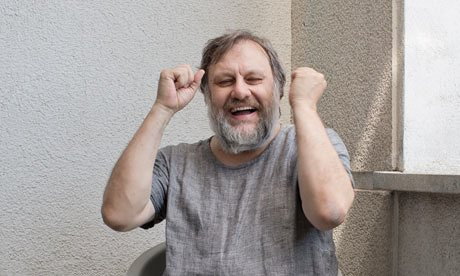

Slavoj Žižek is a Slovene sociologist, philosopher, and cultural critic.
He was born in Ljubljana, Slovenia (then part of SFR Yugoslavia). He received a Doctor of Arts in Philosophy from the University of Ljubljana and studied psychoanalysis at the University of Paris VIII with Jacques-Alain Miller and François Regnault. In 1990 he was a candidate with the party Liberal Democracy of Slovenia for Presidency of the Republic of Slovenia (an auxiliary institution, abolished in 1992).
Since 2005, Žižek has been a member of the Slovenian Academy of Sciences and Arts.
Žižek is well known for his use of the works of 20th century French psychoanalyst Jacques Lacan in a new reading of popular culture. He writes on many topics including the Iraq War, fundamentalism, capitalism, tolerance, political correctness, globalization, subjectivity, human rights, Lenin, myth, cyberspace, postmodernism, multiculturalism, post-marxism, David Lynch, and Alfred Hitchcock.
In an interview with the Spanish newspaper El País he jokingly described himself as an "orthodox Lacanian Stalinist". In an interview with Amy Goodman on Democracy Now! he described himself as a "Marxist" and a "Communist."